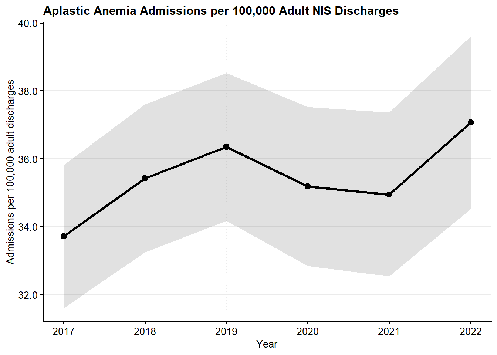
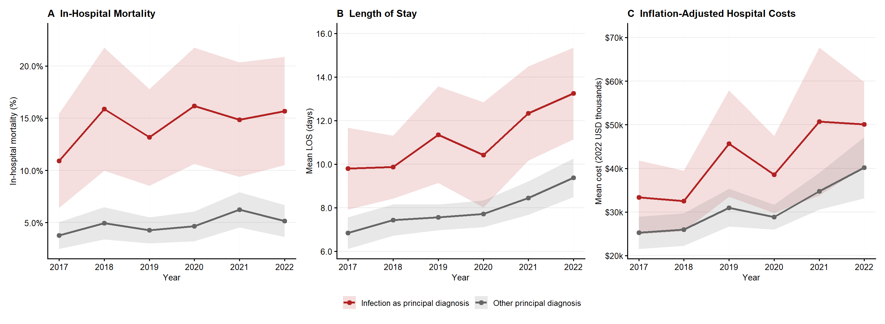

Infection-Driven Admissions, In-Hospital Mortality, and Resource Use in Adults with Aplastic Anemia: A National Inpatient Sample Analysis, 2017–2022
NIS Analysis for Research Council of Pakistan
Muhammad Umer Sohail ![]()
Preamble
Reference Papers:
Study Objective: Estimate how often adult aplastic anemia (AA) hospitalizations are driven by a serious infection, and compare in-hospital mortality and resource use between infection-driven and other admissions.
Data Source: Cross-sectional analysis of the National Inpatient Sample (NIS) from 2017 to 2022.
Patient Selection: Included adult (age 18 years or older) non-elective admissions with any-listed acquired AA (ICD-10-CM D61.1, D61.2, D61.3, D61.9). Excluded constitutional AA (D61.0), pancytopenia (D61.81), myelophthisis (D61.82), hematologic malignancy or myelodysplastic syndrome, chemotherapy encounters, COVID-19, pregnancy-related admissions, transfers to another acute-care hospital (outcome unobserved), allogeneic hematopoietic stem cell transplantation or post-transplant status or complications, and records missing mortality, sex, insurance or admission type. Infection-driven admission was defined by a serious infection as the principal diagnosis (sepsis, pneumonia, cytomegalovirus disease, or deep invasive fungal infection, including Pneumocystis and other mycoses).
Outcomes:
- In-hospital mortality (primary)
- Invasive mechanical ventilation
- Acute kidney injury (secondary diagnosis)
- Nontraumatic intracranial hemorrhage (I60–I62, secondary diagnosis)
- Gastrointestinal hemorrhage (K92.0–K92.2, secondary diagnosis)
- Length of stay (days)
- Inflation-adjusted hospital cost, standardized to 2022 USD
Covariates:
- Demographics: age, sex, race, median household income quartile by patient ZIP code, and primary payer.
- Hospital characteristics: hospital region, bed size, and location/teaching status.
- Comorbidity burden: Elixhauser comorbidity count and autoimmune disease.
- Calendar year.
Statistical Analysis:
- All analyses incorporated NIS discharge weights, strata and clustering to account for the complex survey design. Hospital and stratum codes were made year-specific before pooling 2017–2022, and the survey design objects were built on the full NIS sample.
- Baseline characteristics and outcomes are summarized by infection status with survey-weighted statistics.
- Mortality and other binary outcomes were modeled using survey-weighted logistic regression, reported as adjusted odds ratios.
- Length of stay was modeled with a survey-weighted quasi-Poisson log-link model, and cost with a survey-weighted Gamma log-link model, both reported as ratios of means.
- Effect modification by age was tested with an infection-by-age-group interaction in the mortality model.
- Length of stay is not a covariate, because it lies on the causal path.
- Hospital costs were estimated by multiplying total hospital charges by HCUP cost-to-charge ratios and were inflation-adjusted to 2022 USD using CPI-U. The cost analyses exclude admissions without an available HCUP cost-to-charge ratio, and the cost model also excludes zero costs, because the Gamma model requires positive values.
- Race was grouped as White, Black, Hispanic, Asian or Pacific Islander, and Other; Native American admissions were combined with Other because the group is small.
- Acute kidney injury, intracranial hemorrhage and gastrointestinal hemorrhage were counted only when coded as a secondary diagnosis. Admissions with that condition as the principal diagnosis were excluded from that outcome’s Table 2 percentage and from its model, because the condition was then the reason for admission. Secondary diagnoses may have been present on admission, since the NIS does not record present-on-admission status, so these outcomes are associations rather than complications.
- Because events are sparse, the intracranial hemorrhage model adjusts only for age, sex, calendar year and Elixhauser count. It is exploratory and its confidence intervals are wide.
- Models use complete cases: admissions with missing race, income quartile or, for the LOS model, missing length of stay are excluded from the regression models (except the intracranial hemorrhage model, which does not include race or income).
- Sensitivity analyses: neutropenia and thrombocytopenia added to the mortality model; mortality with a broader principal-diagnosis infection definition (the main definition plus urinary tract infection N39.0, cellulitis L03, C. difficile A04.7 and bacteremia R78.81); mortality excluding admissions with solid-tumour or antineoplastic-toxicity codes; length of stay and cost restricted to survivors.
- Limitation: the aplastic anemia code D61.1 (drug-induced) can capture marrow suppression from chemotherapy for solid tumours, which is not excluded in the main analysis.
- Gastrointestinal hemorrhage was defined by K92.0–K92.2 only, so ulcer and diverticular bleeding are not counted.
Software: All analyses were performed using R Version 4.6.1 (R Foundation for Statistical Computing, Vienna, Austria).
Trends in AA Admissions

Baseline Characteristics
N and n are survey-weighted national estimates, pooled 2017–2022.
| Characteristic | Overall N = 32,7551 |
Infection as principal diagnosis
|
|
|---|---|---|---|
| No N = 27,2051 |
Yes N = 5,5501 |
||
| Age, y | 62 (18) | 61 (19) | 64 (17) |
| Race | |||
| White | 19,590 (61%) | 16,170 (61%) | 3,420 (63%) |
| Asian or Pacific Islander | 1,390 (4.3%) | 1,110 (4.2%) | 280 (5.2%) |
| Black | 6,265 (20%) | 5,295 (20%) | 970 (18%) |
| Hispanic | 3,500 (11%) | 2,975 (11%) | 525 (9.7%) |
| Other | 1,230 (3.8%) | 1,020 (3.8%) | 210 (3.9%) |
| Sex | |||
| Male | 15,485 (47%) | 12,730 (47%) | 2,755 (50%) |
| Female | 17,270 (53%) | 14,475 (53%) | 2,795 (50%) |
| Residential income | |||
| Q4 | 7,060 (22%) | 5,810 (22%) | 1,250 (23%) |
| Q1 | 9,145 (28%) | 7,625 (29%) | 1,520 (28%) |
| Q2 | 8,220 (26%) | 6,840 (26%) | 1,380 (25%) |
| Q3 | 7,770 (24%) | 6,455 (24%) | 1,315 (24%) |
| Expected primary payer | |||
| Private | 7,175 (22%) | 6,105 (22%) | 1,070 (19%) |
| Medicaid | 5,755 (18%) | 4,800 (18%) | 955 (17%) |
| Medicare | 18,100 (55%) | 14,840 (55%) | 3,260 (59%) |
| Other | 1,725 (5.3%) | 1,460 (5.4%) | 265 (4.8%) |
| Hospital region | |||
| Northeast | 6,980 (21%) | 5,915 (22%) | 1,065 (19%) |
| Midwest | 6,800 (21%) | 5,670 (21%) | 1,130 (20%) |
| South | 11,770 (36%) | 9,915 (36%) | 1,855 (33%) |
| West | 7,205 (22%) | 5,705 (21%) | 1,500 (27%) |
| Hospital bedsize | |||
| Small | 5,520 (17%) | 4,490 (17%) | 1,030 (19%) |
| Medium | 8,265 (25%) | 6,810 (25%) | 1,455 (26%) |
| Large | 18,970 (58%) | 15,905 (58%) | 3,065 (55%) |
| Hospital location and teaching status | |||
| Rural | 2,530 (7.7%) | 2,030 (7.5%) | 500 (9.0%) |
| Urban, non-teaching | 5,270 (16%) | 4,220 (16%) | 1,050 (19%) |
| Urban, teaching | 24,955 (76%) | 20,955 (77%) | 4,000 (72%) |
| Autoimmune disease | 2,145 (6.5%) | 1,835 (6.7%) | 310 (5.6%) |
| Elixhauser comorbidity count | 4.76 (2.46) | 4.65 (2.47) | 5.30 (2.37) |
| Neutropenia | 2,000 (6.1%) | 1,635 (6.0%) | 365 (6.6%) |
| Thrombocytopenia | 8,615 (26%) | 7,110 (26%) | 1,505 (27%) |
| Neutropenic fever | 1,125 (3.4%) | 925 (3.4%) | 200 (3.6%) |
| Red blood cell transfusion | 9,835 (30%) | 8,225 (30%) | 1,610 (29%) |
| Platelet transfusion | 3,150 (9.6%) | 2,700 (9.9%) | 450 (8.1%) |
| 1 Mean (SD); n (%) | |||
Outcomes Table
| Characteristic | Overall N = 32,7551 |
Infection as principal diagnosis
|
|
|---|---|---|---|
| No N = 27,2051 |
Yes N = 5,5501 |
||
| Invasive mechanical ventilation | 2,200 (6.7%) | 1,220 (4.5%) | 980 (18%) |
| Acute kidney injury (secondary diagnosis) | 9,745 (31%) | 7,020 (27%) | 2,725 (49%) |
| Intracranial hemorrhage (secondary diagnosis) | 340 (1.0%) | 280 (1.0%) | 60 (1.1%) |
| Gastrointestinal hemorrhage (secondary diagnosis) | 1,485 (4.6%) | 1,185 (4.4%) | 300 (5.4%) |
| Length of stay (days) | 5 (3, 10) | 5 (3, 9) | 7 (4, 13) |
| Inflation-adjusted total cost, 2022 USD ($) | 14,637 (8,144, 30,668) | 13,751 (7,676, 27,717) | 19,903 (10,882, 43,394) |
| Discharge disposition | |||
| Died in hospital | 2,115 (6.5%) | 1,315 (4.8%) | 800 (14%) |
| Facility transfer | 6,695 (20%) | 5,300 (19%) | 1,395 (25%) |
| Home or home health | 23,385 (71%) | 20,090 (74%) | 3,295 (59%) |
| Other (AMA or unknown) | 560 (1.7%) | 500 (1.8%) | 60 (1.1%) |
| 1 n (%); Median (Q1, Q3) | |||
Multivariable Regression
Mortality (primary outcome)
| Characteristic | OR | 95% CI | p-value |
|---|---|---|---|
| Infection as principal diagnosis | |||
| No | — | — | |
| Yes | 3.06 | 2.46, 3.80 | <0.001 |
| Year | 1.04 | 0.97, 1.10 | 0.3 |
| Age, y | 1.02 | 1.01, 1.02 | <0.001 |
| Sex | |||
| Male | — | — | |
| Female | 1.00 | 0.81, 1.24 | >0.9 |
| Race | |||
| White | — | — | |
| Asian or Pacific Islander | 0.72 | 0.40, 1.30 | 0.3 |
| Black | 1.09 | 0.82, 1.46 | 0.6 |
| Hispanic | 0.83 | 0.56, 1.24 | 0.4 |
| Other | 1.67 | 1.00, 2.77 | 0.048 |
| Residential income | |||
| Q4 | — | — | |
| Q1 | 0.99 | 0.72, 1.36 | >0.9 |
| Q2 | 1.07 | 0.78, 1.46 | 0.7 |
| Q3 | 0.93 | 0.67, 1.28 | 0.6 |
| Expected primary payer | |||
| Private | — | — | |
| Medicaid | 0.76 | 0.53, 1.11 | 0.2 |
| Medicare | 0.65 | 0.48, 0.88 | 0.005 |
| Other | 1.09 | 0.63, 1.87 | 0.8 |
| Hospital region | |||
| Northeast | — | — | |
| Midwest | 1.05 | 0.76, 1.46 | 0.8 |
| South | 1.03 | 0.76, 1.41 | 0.8 |
| West | 1.24 | 0.88, 1.75 | 0.2 |
| Hospital bedsize | |||
| Small | — | — | |
| Medium | 1.19 | 0.84, 1.69 | 0.3 |
| Large | 1.08 | 0.80, 1.46 | 0.6 |
| Hospital location and teaching status | |||
| Rural | — | — | |
| Urban, non-teaching | 0.86 | 0.53, 1.41 | 0.5 |
| Urban, teaching | 1.00 | 0.68, 1.49 | >0.9 |
| Elixhauser comorbidity count | 1.22 | 1.17, 1.27 | <0.001 |
| Autoimmune disease | |||
| No | — | — | |
| Yes | 1.13 | 0.77, 1.66 | 0.5 |
| Abbreviations: CI = Confidence Interval, OR = Odds Ratio | |||
Invasive Mechanical Ventilation
| Characteristic | OR | 95% CI | p-value |
|---|---|---|---|
| Infection as principal diagnosis | |||
| No | — | — | |
| Yes | 4.39 | 3.52, 5.46 | <0.001 |
| Year | 1.04 | 0.97, 1.11 | 0.3 |
| Age, y | 0.98 | 0.98, 0.99 | <0.001 |
| Sex | |||
| Male | — | — | |
| Female | 0.81 | 0.65, 1.01 | 0.057 |
| Race | |||
| White | — | — | |
| Asian or Pacific Islander | 1.32 | 0.78, 2.24 | 0.3 |
| Black | 1.13 | 0.85, 1.51 | 0.4 |
| Hispanic | 0.98 | 0.66, 1.45 | >0.9 |
| Other | 1.38 | 0.80, 2.37 | 0.2 |
| Residential income | |||
| Q4 | — | — | |
| Q1 | 0.88 | 0.64, 1.23 | 0.5 |
| Q2 | 1.08 | 0.79, 1.49 | 0.6 |
| Q3 | 1.01 | 0.73, 1.39 | >0.9 |
| Expected primary payer | |||
| Private | — | — | |
| Medicaid | 0.87 | 0.61, 1.23 | 0.4 |
| Medicare | 1.08 | 0.79, 1.47 | 0.6 |
| Other | 1.18 | 0.69, 2.01 | 0.5 |
| Hospital region | |||
| Northeast | — | — | |
| Midwest | 1.08 | 0.77, 1.50 | 0.7 |
| South | 1.10 | 0.80, 1.50 | 0.6 |
| West | 0.94 | 0.65, 1.36 | 0.7 |
| Hospital bedsize | |||
| Small | — | — | |
| Medium | 1.55 | 1.08, 2.21 | 0.017 |
| Large | 1.30 | 0.95, 1.80 | 0.11 |
| Hospital location and teaching status | |||
| Rural | — | — | |
| Urban, non-teaching | 0.80 | 0.46, 1.39 | 0.4 |
| Urban, teaching | 1.08 | 0.70, 1.65 | 0.7 |
| Elixhauser comorbidity count | 1.33 | 1.28, 1.40 | <0.001 |
| Autoimmune disease | |||
| No | — | — | |
| Yes | 0.62 | 0.39, 0.99 | 0.047 |
| Abbreviations: CI = Confidence Interval, OR = Odds Ratio | |||
Acute Kidney Injury
| Characteristic | OR | 95% CI | p-value |
|---|---|---|---|
| Infection as principal diagnosis | |||
| No | — | — | |
| Yes | 2.41 | 2.08, 2.78 | <0.001 |
| Year | 1.05 | 1.01, 1.09 | 0.013 |
| Age, y | 1.01 | 1.00, 1.01 | <0.001 |
| Sex | |||
| Male | — | — | |
| Female | 0.71 | 0.63, 0.80 | <0.001 |
| Race | |||
| White | — | — | |
| Asian or Pacific Islander | 1.02 | 0.74, 1.39 | >0.9 |
| Black | 1.31 | 1.11, 1.55 | 0.002 |
| Hispanic | 1.06 | 0.86, 1.31 | 0.6 |
| Other | 1.29 | 0.94, 1.77 | 0.11 |
| Residential income | |||
| Q4 | — | — | |
| Q1 | 0.99 | 0.82, 1.20 | >0.9 |
| Q2 | 1.00 | 0.84, 1.20 | >0.9 |
| Q3 | 1.08 | 0.91, 1.29 | 0.4 |
| Expected primary payer | |||
| Private | — | — | |
| Medicaid | 0.98 | 0.80, 1.21 | 0.9 |
| Medicare | 0.98 | 0.83, 1.17 | 0.8 |
| Other | 0.90 | 0.65, 1.24 | 0.5 |
| Hospital region | |||
| Northeast | — | — | |
| Midwest | 0.82 | 0.67, 0.99 | 0.040 |
| South | 1.00 | 0.84, 1.19 | >0.9 |
| West | 1.11 | 0.92, 1.35 | 0.3 |
| Hospital bedsize | |||
| Small | — | — | |
| Medium | 1.05 | 0.87, 1.26 | 0.6 |
| Large | 1.06 | 0.90, 1.25 | 0.5 |
| Hospital location and teaching status | |||
| Rural | — | — | |
| Urban, non-teaching | 0.98 | 0.72, 1.34 | >0.9 |
| Urban, teaching | 1.52 | 1.17, 1.97 | 0.002 |
| Elixhauser comorbidity count | 1.29 | 1.25, 1.32 | <0.001 |
| Autoimmune disease | |||
| No | — | — | |
| Yes | 0.89 | 0.69, 1.13 | 0.3 |
| Abbreviations: CI = Confidence Interval, OR = Odds Ratio | |||
Intracranial Hemorrhage
| Characteristic | OR | 95% CI | p-value |
|---|---|---|---|
| Infection as principal diagnosis | |||
| No | — | — | |
| Yes | 0.98 | 0.51, 1.86 | >0.9 |
| Age, y | 1.00 | 0.99, 1.01 | 0.9 |
| Sex | |||
| Male | — | — | |
| Female | 0.75 | 0.46, 1.21 | 0.2 |
| Year | 1.01 | 0.89, 1.16 | 0.9 |
| Elixhauser comorbidity count | 1.11 | 0.99, 1.24 | 0.068 |
| Abbreviations: CI = Confidence Interval, OR = Odds Ratio | |||
Gastrointestinal Hemorrhage
| Characteristic | OR | 95% CI | p-value |
|---|---|---|---|
| Infection as principal diagnosis | |||
| No | — | — | |
| Yes | 1.07 | 0.79, 1.46 | 0.7 |
| Year | 0.95 | 0.88, 1.02 | 0.2 |
| Age, y | 1.01 | 1.00, 1.02 | 0.031 |
| Sex | |||
| Male | — | — | |
| Female | 0.91 | 0.71, 1.16 | 0.4 |
| Race | |||
| White | — | — | |
| Asian or Pacific Islander | 1.39 | 0.79, 2.42 | 0.3 |
| Black | 1.05 | 0.74, 1.48 | 0.8 |
| Hispanic | 0.98 | 0.65, 1.47 | >0.9 |
| Other | 1.19 | 0.66, 2.17 | 0.6 |
| Residential income | |||
| Q4 | — | — | |
| Q1 | 0.95 | 0.65, 1.40 | 0.8 |
| Q2 | 1.15 | 0.80, 1.65 | 0.4 |
| Q3 | 0.81 | 0.56, 1.18 | 0.3 |
| Expected primary payer | |||
| Private | — | — | |
| Medicaid | 1.80 | 1.18, 2.74 | 0.006 |
| Medicare | 1.19 | 0.80, 1.77 | 0.4 |
| Other | 1.86 | 1.04, 3.31 | 0.036 |
| Hospital region | |||
| Northeast | — | — | |
| Midwest | 1.34 | 0.88, 2.02 | 0.2 |
| South | 1.16 | 0.79, 1.69 | 0.4 |
| West | 1.29 | 0.85, 1.97 | 0.2 |
| Hospital bedsize | |||
| Small | — | — | |
| Medium | 1.67 | 1.13, 2.47 | 0.010 |
| Large | 1.30 | 0.90, 1.87 | 0.2 |
| Hospital location and teaching status | |||
| Rural | — | — | |
| Urban, non-teaching | 0.71 | 0.38, 1.34 | 0.3 |
| Urban, teaching | 1.19 | 0.69, 2.05 | 0.5 |
| Elixhauser comorbidity count | 1.12 | 1.07, 1.17 | <0.001 |
| Autoimmune disease | |||
| No | — | — | |
| Yes | 1.16 | 0.74, 1.81 | 0.5 |
| Abbreviations: CI = Confidence Interval, OR = Odds Ratio | |||
Length of Stay
| Characteristic | Ratio of mean LOS | 95% CI | p-value |
|---|---|---|---|
| Infection as principal diagnosis | |||
| No | — | — | |
| Yes | 1.39 | 1.28, 1.51 | <0.001 |
| Year | 1.04 | 1.02, 1.06 | <0.001 |
| Age, y | 0.99 | 0.99, 1.00 | <0.001 |
| Sex | |||
| Male | — | — | |
| Female | 0.92 | 0.87, 0.98 | 0.008 |
| Race | |||
| White | — | — | |
| Asian or Pacific Islander | 0.95 | 0.82, 1.09 | 0.4 |
| Black | 1.03 | 0.93, 1.13 | 0.6 |
| Hispanic | 1.08 | 0.96, 1.21 | 0.2 |
| Other | 1.07 | 0.89, 1.27 | 0.5 |
| Residential income | |||
| Q4 | — | — | |
| Q1 | 1.01 | 0.91, 1.12 | 0.9 |
| Q2 | 1.03 | 0.93, 1.13 | 0.6 |
| Q3 | 1.09 | 0.98, 1.20 | 0.11 |
| Expected primary payer | |||
| Private | — | — | |
| Medicaid | 1.06 | 0.94, 1.19 | 0.3 |
| Medicare | 0.95 | 0.86, 1.06 | 0.4 |
| Other | 1.10 | 0.93, 1.31 | 0.2 |
| Hospital region | |||
| Northeast | — | — | |
| Midwest | 0.84 | 0.76, 0.93 | <0.001 |
| South | 0.85 | 0.78, 0.94 | <0.001 |
| West | 0.84 | 0.75, 0.93 | <0.001 |
| Hospital bedsize | |||
| Small | — | — | |
| Medium | 1.26 | 1.15, 1.39 | <0.001 |
| Large | 1.42 | 1.31, 1.54 | <0.001 |
| Hospital location and teaching status | |||
| Rural | — | — | |
| Urban, non-teaching | 1.21 | 1.04, 1.39 | 0.012 |
| Urban, teaching | 1.50 | 1.32, 1.71 | <0.001 |
| Elixhauser comorbidity count | 1.12 | 1.10, 1.13 | <0.001 |
| Autoimmune disease | |||
| No | — | — | |
| Yes | 0.97 | 0.84, 1.12 | 0.7 |
| Abbreviation: CI = Confidence Interval | |||
Inflation-Adjusted Cost
| Characteristic | Ratio of mean cost | 95% CI | p-value |
|---|---|---|---|
| Infection as principal diagnosis | |||
| No | — | — | |
| Yes | 1.38 | 1.25, 1.52 | <0.001 |
| Year | 1.05 | 1.03, 1.08 | <0.001 |
| Age, y | 0.99 | 0.98, 0.99 | <0.001 |
| Sex | |||
| Male | — | — | |
| Female | 0.93 | 0.86, 1.00 | 0.049 |
| Race | |||
| White | — | — | |
| Asian or Pacific Islander | 0.94 | 0.80, 1.12 | 0.5 |
| Black | 1.11 | 0.99, 1.24 | 0.084 |
| Hispanic | 1.12 | 0.98, 1.28 | 0.092 |
| Other | 1.17 | 0.94, 1.45 | 0.2 |
| Residential income | |||
| Q4 | — | — | |
| Q1 | 0.85 | 0.75, 0.96 | 0.010 |
| Q2 | 0.93 | 0.82, 1.06 | 0.3 |
| Q3 | 0.99 | 0.87, 1.11 | 0.8 |
| Expected primary payer | |||
| Private | — | — | |
| Medicaid | 0.82 | 0.71, 0.94 | 0.004 |
| Medicare | 0.89 | 0.79, 0.99 | 0.041 |
| Other | 1.04 | 0.85, 1.27 | 0.7 |
| Hospital region | |||
| Northeast | — | — | |
| Midwest | 0.88 | 0.77, 1.00 | 0.053 |
| South | 0.77 | 0.68, 0.86 | <0.001 |
| West | 1.13 | 0.98, 1.29 | 0.089 |
| Hospital bedsize | |||
| Small | — | — | |
| Medium | 1.27 | 1.12, 1.45 | <0.001 |
| Large | 1.57 | 1.39, 1.77 | <0.001 |
| Hospital location and teaching status | |||
| Rural | — | — | |
| Urban, non-teaching | 1.28 | 1.08, 1.50 | 0.003 |
| Urban, teaching | 1.85 | 1.60, 2.15 | <0.001 |
| Elixhauser comorbidity count | 1.09 | 1.07, 1.10 | <0.001 |
| Autoimmune disease | |||
| No | — | — | |
| Yes | 1.02 | 0.83, 1.25 | 0.9 |
| Abbreviation: CI = Confidence Interval | |||
Sensitivity Analyses
Mortality with neutropenia and thrombocytopenia
| Characteristic | OR | 95% CI | p-value |
|---|---|---|---|
| Infection as principal diagnosis | |||
| No | — | — | |
| Yes | 3.05 | 2.45, 3.79 | <0.001 |
| Year | 1.03 | 0.97, 1.10 | 0.3 |
| Age, y | 1.02 | 1.01, 1.03 | <0.001 |
| Sex | |||
| Male | — | — | |
| Female | 0.99 | 0.80, 1.23 | >0.9 |
| Race | |||
| White | — | — | |
| Asian or Pacific Islander | 0.71 | 0.39, 1.29 | 0.3 |
| Black | 1.10 | 0.82, 1.47 | 0.5 |
| Hispanic | 0.83 | 0.55, 1.24 | 0.4 |
| Other | 1.67 | 1.00, 2.78 | 0.048 |
| Residential income | |||
| Q4 | — | — | |
| Q1 | 0.99 | 0.72, 1.36 | >0.9 |
| Q2 | 1.07 | 0.78, 1.46 | 0.7 |
| Q3 | 0.92 | 0.67, 1.28 | 0.6 |
| Expected primary payer | |||
| Private | — | — | |
| Medicaid | 0.77 | 0.53, 1.12 | 0.2 |
| Medicare | 0.66 | 0.49, 0.89 | 0.006 |
| Other | 1.09 | 0.63, 1.88 | 0.7 |
| Hospital region | |||
| Northeast | — | — | |
| Midwest | 1.05 | 0.76, 1.46 | 0.8 |
| South | 1.03 | 0.75, 1.40 | 0.9 |
| West | 1.24 | 0.88, 1.75 | 0.2 |
| Hospital bedsize | |||
| Small | — | — | |
| Medium | 1.19 | 0.84, 1.69 | 0.3 |
| Large | 1.08 | 0.80, 1.46 | 0.6 |
| Hospital location and teaching status | |||
| Rural | — | — | |
| Urban, non-teaching | 0.86 | 0.52, 1.40 | 0.5 |
| Urban, teaching | 1.00 | 0.67, 1.49 | >0.9 |
| Elixhauser comorbidity count | 1.22 | 1.17, 1.28 | <0.001 |
| Autoimmune disease | |||
| No | — | — | |
| Yes | 1.14 | 0.77, 1.68 | 0.5 |
| Neutropenia | |||
| No | — | — | |
| Yes | 1.39 | 0.89, 2.16 | 0.14 |
| Thrombocytopenia | |||
| No | — | — | |
| Yes | 1.01 | 0.80, 1.28 | >0.9 |
| Abbreviations: CI = Confidence Interval, OR = Odds Ratio | |||
Length of stay among survivors
| Characteristic | Ratio of mean LOS | 95% CI | p-value |
|---|---|---|---|
| Infection as principal diagnosis | |||
| No | — | — | |
| Yes | 1.37 | 1.26, 1.49 | <0.001 |
| Year | 1.03 | 1.01, 1.05 | 0.004 |
| Age, y | 0.99 | 0.99, 1.00 | <0.001 |
| Sex | |||
| Male | — | — | |
| Female | 0.91 | 0.86, 0.97 | 0.006 |
| Race | |||
| White | — | — | |
| Asian or Pacific Islander | 0.98 | 0.85, 1.14 | 0.8 |
| Black | 1.02 | 0.93, 1.11 | 0.7 |
| Hispanic | 1.06 | 0.95, 1.19 | 0.3 |
| Other | 1.02 | 0.84, 1.23 | 0.9 |
| Residential income | |||
| Q4 | — | — | |
| Q1 | 1.00 | 0.91, 1.11 | >0.9 |
| Q2 | 1.02 | 0.92, 1.12 | 0.7 |
| Q3 | 1.08 | 0.98, 1.19 | 0.14 |
| Expected primary payer | |||
| Private | — | — | |
| Medicaid | 1.10 | 0.98, 1.23 | 0.10 |
| Medicare | 1.00 | 0.91, 1.10 | >0.9 |
| Other | 1.17 | 0.98, 1.39 | 0.084 |
| Hospital region | |||
| Northeast | — | — | |
| Midwest | 0.87 | 0.78, 0.96 | 0.007 |
| South | 0.90 | 0.82, 0.98 | 0.017 |
| West | 0.83 | 0.75, 0.93 | <0.001 |
| Hospital bedsize | |||
| Small | — | — | |
| Medium | 1.25 | 1.13, 1.38 | <0.001 |
| Large | 1.39 | 1.28, 1.51 | <0.001 |
| Hospital location and teaching status | |||
| Rural | — | — | |
| Urban, non-teaching | 1.10 | 0.95, 1.27 | 0.2 |
| Urban, teaching | 1.42 | 1.25, 1.61 | <0.001 |
| Elixhauser comorbidity count | 1.12 | 1.10, 1.13 | <0.001 |
| Autoimmune disease | |||
| No | — | — | |
| Yes | 0.89 | 0.79, 1.01 | 0.061 |
| Abbreviation: CI = Confidence Interval | |||
Cost among survivors
| Characteristic | Ratio of mean cost | 95% CI | p-value |
|---|---|---|---|
| Infection as principal diagnosis | |||
| No | — | — | |
| Yes | 1.28 | 1.16, 1.42 | <0.001 |
| Year | 1.04 | 1.02, 1.07 | <0.001 |
| Age, y | 0.99 | 0.99, 0.99 | <0.001 |
| Sex | |||
| Male | — | — | |
| Female | 0.92 | 0.85, 0.99 | 0.026 |
| Race | |||
| White | — | — | |
| Asian or Pacific Islander | 0.97 | 0.82, 1.15 | 0.7 |
| Black | 1.06 | 0.95, 1.18 | 0.3 |
| Hispanic | 1.13 | 0.98, 1.29 | 0.084 |
| Other | 1.14 | 0.90, 1.45 | 0.3 |
| Residential income | |||
| Q4 | — | — | |
| Q1 | 0.85 | 0.75, 0.97 | 0.014 |
| Q2 | 0.90 | 0.80, 1.01 | 0.074 |
| Q3 | 0.99 | 0.88, 1.11 | 0.8 |
| Expected primary payer | |||
| Private | — | — | |
| Medicaid | 0.88 | 0.77, 1.01 | 0.065 |
| Medicare | 0.94 | 0.84, 1.05 | 0.3 |
| Other | 1.12 | 0.91, 1.37 | 0.3 |
| Hospital region | |||
| Northeast | — | — | |
| Midwest | 0.87 | 0.77, 0.99 | 0.035 |
| South | 0.81 | 0.72, 0.91 | <0.001 |
| West | 1.11 | 0.97, 1.28 | 0.12 |
| Hospital bedsize | |||
| Small | — | — | |
| Medium | 1.27 | 1.13, 1.42 | <0.001 |
| Large | 1.55 | 1.40, 1.72 | <0.001 |
| Hospital location and teaching status | |||
| Rural | — | — | |
| Urban, non-teaching | 1.15 | 0.97, 1.35 | 0.10 |
| Urban, teaching | 1.71 | 1.48, 1.99 | <0.001 |
| Elixhauser comorbidity count | 1.07 | 1.06, 1.09 | <0.001 |
| Autoimmune disease | |||
| No | — | — | |
| Yes | 0.87 | 0.76, 0.99 | 0.036 |
| Abbreviation: CI = Confidence Interval | |||
Mortality with broader principal-diagnosis infection
| Characteristic | OR | 95% CI | p-value |
|---|---|---|---|
| Broad infection as principal diagnosis | |||
| No | — | — | |
| Yes | 2.65 | 2.13, 3.29 | <0.001 |
| Year | 1.04 | 0.97, 1.11 | 0.3 |
| Age, y | 1.02 | 1.01, 1.02 | <0.001 |
| Sex | |||
| Male | — | — | |
| Female | 0.99 | 0.80, 1.23 | >0.9 |
| Race | |||
| White | — | — | |
| Asian or Pacific Islander | 0.73 | 0.40, 1.31 | 0.3 |
| Black | 1.10 | 0.82, 1.47 | 0.5 |
| Hispanic | 0.83 | 0.56, 1.24 | 0.4 |
| Other | 1.69 | 1.02, 2.80 | 0.041 |
| Residential income | |||
| Q4 | — | — | |
| Q1 | 0.99 | 0.72, 1.37 | >0.9 |
| Q2 | 1.06 | 0.78, 1.45 | 0.7 |
| Q3 | 0.92 | 0.67, 1.28 | 0.6 |
| Expected primary payer | |||
| Private | — | — | |
| Medicaid | 0.77 | 0.53, 1.12 | 0.2 |
| Medicare | 0.66 | 0.49, 0.88 | 0.005 |
| Other | 1.10 | 0.64, 1.89 | 0.7 |
| Hospital region | |||
| Northeast | — | — | |
| Midwest | 1.06 | 0.76, 1.47 | 0.7 |
| South | 1.03 | 0.76, 1.41 | 0.8 |
| West | 1.26 | 0.89, 1.77 | 0.2 |
| Hospital bedsize | |||
| Small | — | — | |
| Medium | 1.19 | 0.84, 1.69 | 0.3 |
| Large | 1.07 | 0.79, 1.45 | 0.7 |
| Hospital location and teaching status | |||
| Rural | — | — | |
| Urban, non-teaching | 0.86 | 0.52, 1.40 | 0.5 |
| Urban, teaching | 0.99 | 0.67, 1.47 | >0.9 |
| Elixhauser comorbidity count | 1.23 | 1.18, 1.28 | <0.001 |
| Autoimmune disease | |||
| No | — | — | |
| Yes | 1.10 | 0.75, 1.63 | 0.6 |
| Abbreviations: CI = Confidence Interval, OR = Odds Ratio | |||
Mortality excluding solid-tumour or antineoplastic-toxicity codes
| Characteristic | OR | 95% CI | p-value |
|---|---|---|---|
| Infection as principal diagnosis | |||
| No | — | — | |
| Yes | 3.66 | 2.80, 4.79 | <0.001 |
| Year | 1.02 | 0.94, 1.11 | 0.6 |
| Age, y | 1.02 | 1.01, 1.03 | 0.001 |
| Sex | |||
| Male | — | — | |
| Female | 1.11 | 0.85, 1.46 | 0.4 |
| Race | |||
| White | — | — | |
| Asian or Pacific Islander | 0.78 | 0.38, 1.60 | 0.5 |
| Black | 1.16 | 0.81, 1.66 | 0.4 |
| Hispanic | 0.78 | 0.47, 1.29 | 0.3 |
| Other | 1.75 | 0.93, 3.27 | 0.082 |
| Residential income | |||
| Q4 | — | — | |
| Q1 | 0.93 | 0.62, 1.39 | 0.7 |
| Q2 | 1.08 | 0.73, 1.62 | 0.7 |
| Q3 | 0.98 | 0.66, 1.47 | >0.9 |
| Expected primary payer | |||
| Private | — | — | |
| Medicaid | 0.78 | 0.49, 1.25 | 0.3 |
| Medicare | 0.61 | 0.42, 0.89 | 0.011 |
| Other | 1.15 | 0.59, 2.25 | 0.7 |
| Hospital region | |||
| Northeast | — | — | |
| Midwest | 1.28 | 0.84, 1.95 | 0.2 |
| South | 1.21 | 0.81, 1.81 | 0.3 |
| West | 1.33 | 0.86, 2.07 | 0.2 |
| Hospital bedsize | |||
| Small | — | — | |
| Medium | 1.53 | 0.97, 2.40 | 0.064 |
| Large | 1.37 | 0.92, 2.05 | 0.12 |
| Hospital location and teaching status | |||
| Rural | — | — | |
| Urban, non-teaching | 0.87 | 0.47, 1.60 | 0.6 |
| Urban, teaching | 0.97 | 0.60, 1.56 | 0.9 |
| Elixhauser comorbidity count | 1.22 | 1.16, 1.28 | <0.001 |
| Autoimmune disease | |||
| No | — | — | |
| Yes | 1.31 | 0.85, 2.02 | 0.2 |
| Abbreviations: CI = Confidence Interval, OR = Odds Ratio | |||
Effect Modification by Age
The infection-by-age-group interaction in the mortality model was not statistically significant (Wald test p = 0.562).